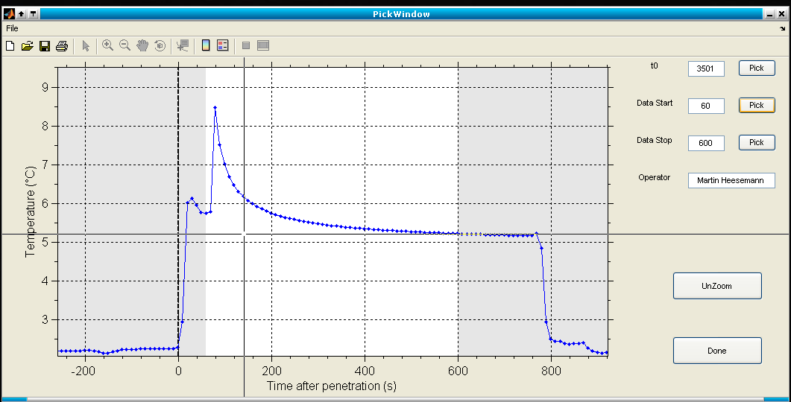
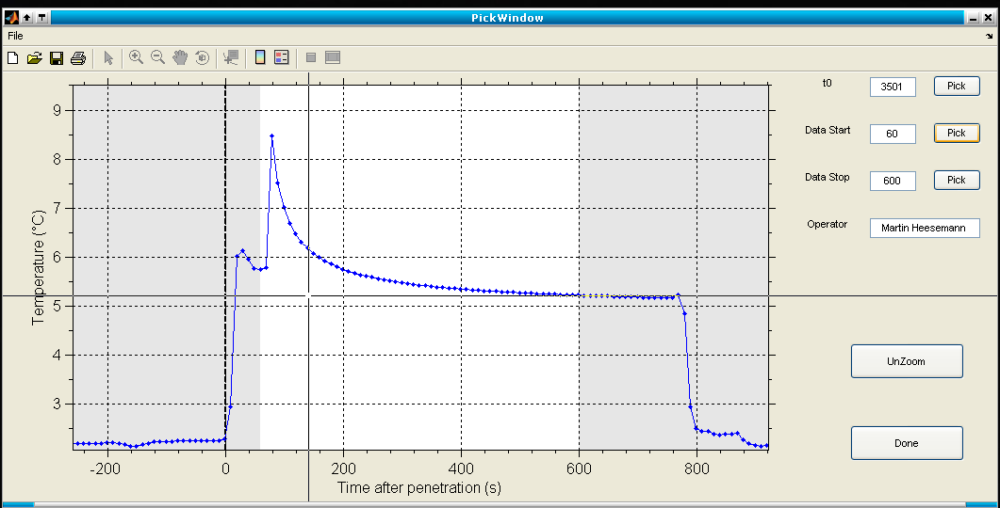
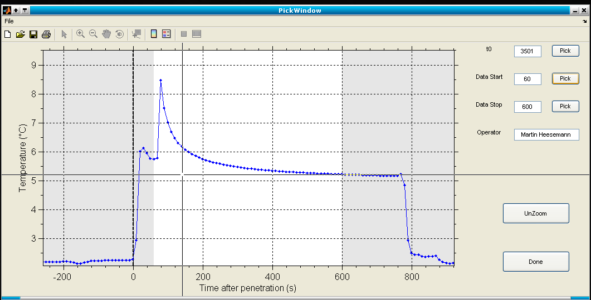
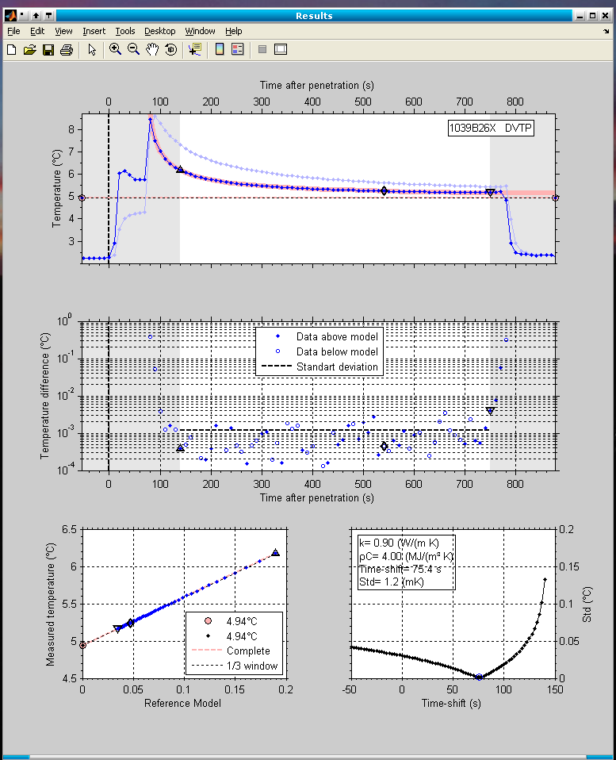
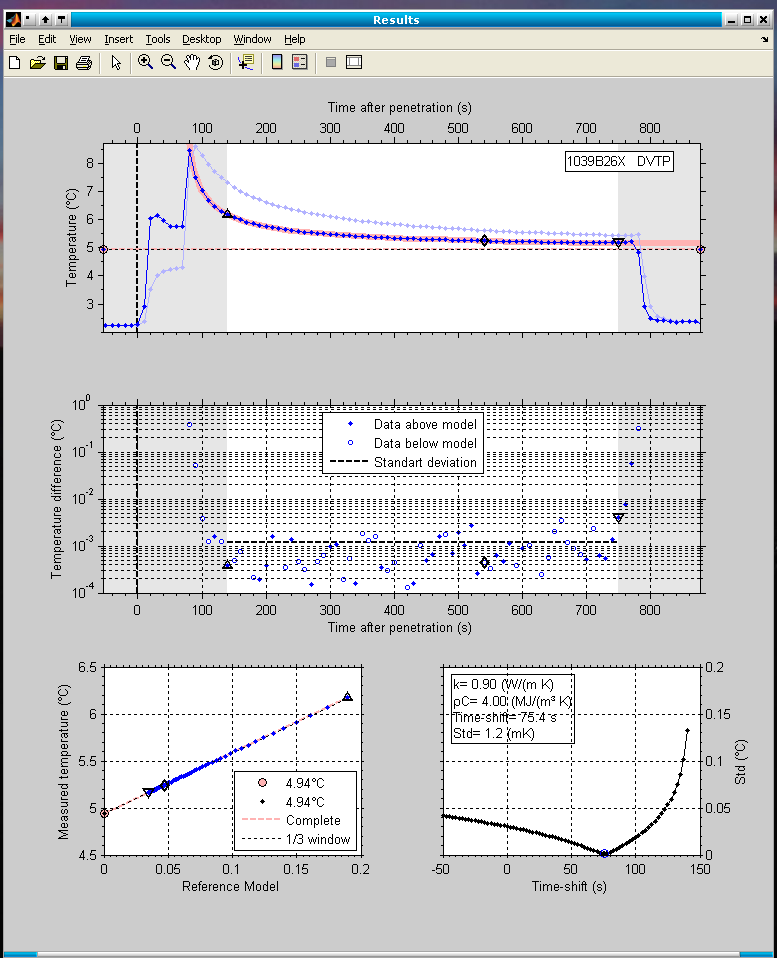

This document describes software to estimate the undisturbed physical state of unconsolidated or semi-consolidated sediments measured with penetrating downhole tools. During the DSDP, ODP, and IODP programs, many tools were developed and deployed to measure formation temperatures and pore pressures. All of these measurements exhibit a transient character due to the decay of penetration induced disturbances of the state of the formation and time constrains do not allow for the complete decay of the disturbances. For all tools, different software solutions were developed to extrapolate the transient data to undisturbed values. Even tough the code and the user-interfaces of the programs are developed to very different stages of sophistication, similar algorithms, based on the processing of marine heat flux measurements (???, Villinger & ???, ???), are used in all programs. The measurements are compared with modeled data (e.g. analytical, numerical, or analog models) for which the undisturbed state is known ... The fundamental difference between all programs is the uses model, which has to take into account the geometry of the used probe.
The aim of this software is to provide a unified basis to process all of the different data types, described above.
The initial version of the software is designed to work with data of the APCT tools and was especially developed to make use of the enhanced data quality of the APCT-3 tool. Since there is no difference in tool geometry between the APCT-3 and earlier versions of the APCT, the software is able to handle data from both tools. Additionally, it is developed to be easily extended for data from other tools.
This section gives an overview of the basic TP-Fit functionallity by guiding through an step-by-step tutorial.
Run the TPFit.m script in the TP-Fit\MatLab directory within Matlab to launch the graphical user interface (GUI). See the section Installation Installation for detailed instructions how to install and run TP-Fit. A narrow window with some buttons representing the general work-flow should pop up. Usually the buttons will be used from top to bottom.
Load some data you want to process (e.g. the APCT-3 file 1329C09H.dat from the test data directory contains some good data!). It is possible to import APCT (.dat), APCT-3 (.dat) and DVTP (.eng) data. Moreover, saved sessions (.mat) (see below) can be loaded. The first two buttons should turn green, signaling that data was successfully imported and some basic Meta-data was created. If you have loaded a Session file maybe also the Pick and the Compute contours button turn green, depending on the session that was save.
]
Now, provide some picks. Zoom into the region of interest (this region is reused in the result plots, later on!!!) and pick of the tool penetration time t0 and. Now, refine the picks in order to the select a interval (unshaded region) of good data. The interval should consist of as much smooth data as possible, but should not be too close to t0. When you are Done, the Pick button should turn green.

Show Fit gives a first result with standard sediment physical properties. (A) The upper plot shows the measurements (blue dots), the selected data unshaded region) and the last third of the selected data (starting at diamond). The reference model corresponding to the physical properties (shown in lower right plot) is represented by a bold red line and extrapolated temperatures (see below) are shown as dashed and dotted lines. (B) The second plot shows the difference between data and model, and reveals systematic deviations that cannot be recognized in the first plot. (C) The lower left panel shows the measurements plotted over the normalized reference model and undisturbed temperatures (red circle and black dot on T-axis) are extrapolated by linear regression. (D) The lower right panel shows the standard deviation (black line with dots) between data and model over the time-shift by which the model is shifted versus the measured data (see Villinger & ???,??? for explanation of the time-shift). The optimal time-shift which is used in the previous plots is marked by a blue open circle. After a mouse click into the axes, a dashed and a dotted line show up. They show the sensitivity of estimated undisturbed formation temperatures to time-shift changes. With further clicks into the axes it is possible to inspect the effect of different time-shifts (just try!!!). Clicking on the parameter box opens a new window where it is possible to change the model parameters k and rc.


Now, take some time and compute the contour data that is used in the next step .... If you change the picks of the used data window, the contour data should be recalculated, but that is up to you and no checks are done!!!
Explore, once Compute Contours turned green! A mouse click into one of the contour plots will move the white dot and the results of the corresponding physical properties will be displayed in the results plot window. The red star represents the smallest standard deviation. The valid physical properties for the result plot are not continuous. Values are rounded to the closest tenth of the physical properties!
 

It is possible to save any state of your work in a session file (*.mat) and load and resume your work, later on. The session files also contain all results that could be collected by a report generator.
The Make Report creates EPS-files of the current result and contour plots in the data directory. Furthermore, a simple ASCII-report is generated.
Extras provides some interesting features and debugging tools, which can be used at any time. If you moved and resized the figure windows it is possible to save the positions. It is also possible to export the current data structure to the work-space “Data” and inspect how information is added from step to step, or to make a simple screen dump of the data. Be careful if you want to import “Data” from the workspace!
In order to run TP-Fit a recent version of Matlab® (e.g. Version 7) is required. The installation is as simple as unpacking the TP-Fit.zip file on your computer. A TP-Fit directory with three subdirectories is created.
If you have any suggestions or made changes to the documentation, or other files, please let me know, so I can include the changes in upcoming releases.